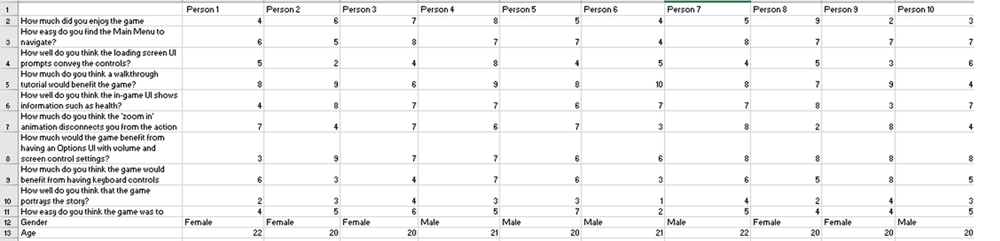

Nebula Knights
Usability Evaluation - Methods
Qualatative
The first method I used to gain info about the games usability was through interviewing people after they played the game.
To start this method off I would let the interviewee play the game several times through so they had a good understanding and
knowledge of the game and then sat down with them and asked them a series of questions. This resulted in me recieving qualatative data
which can be very good for getting opinions on the games usability. However, one large flaw with my method of gathering this kind of data
was that none of the particpants gave me permission to video the interviews which meant that I could not refer back to them later and had
to go on my notes made at the time. This meant that my recordings were less accurate than they perhaps could have been.
Quantitative
The second method of gaining data about Nebula Knights was through questionnaires which had refined versions of the interview questions on.
This allowed me to let quite a few people play the game and then answer the questionnaire independantly which allowed me to gain a lot more data
a lot more quickly. This data is also numerical so has very defined values that can be interpolated into graphs and other forms of data comparison.
